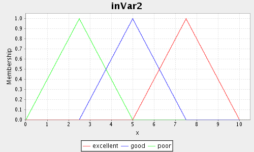
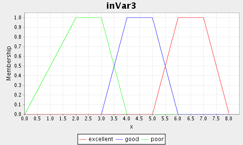
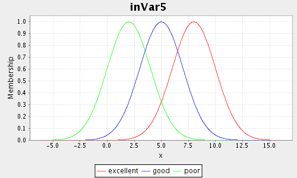
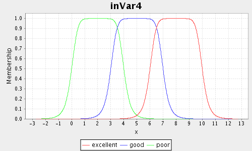
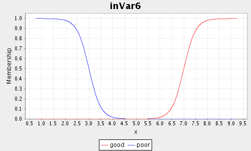
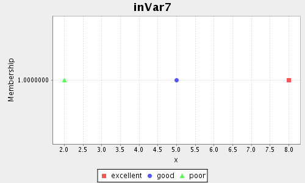
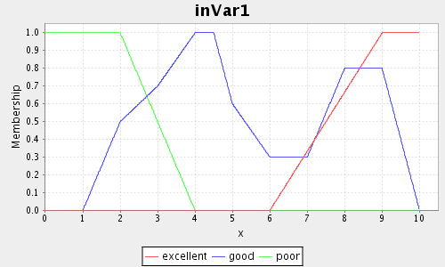
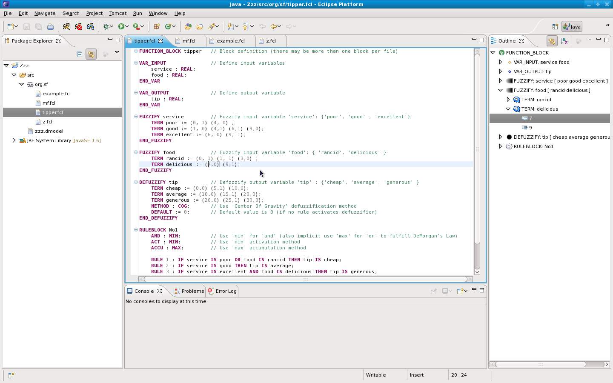
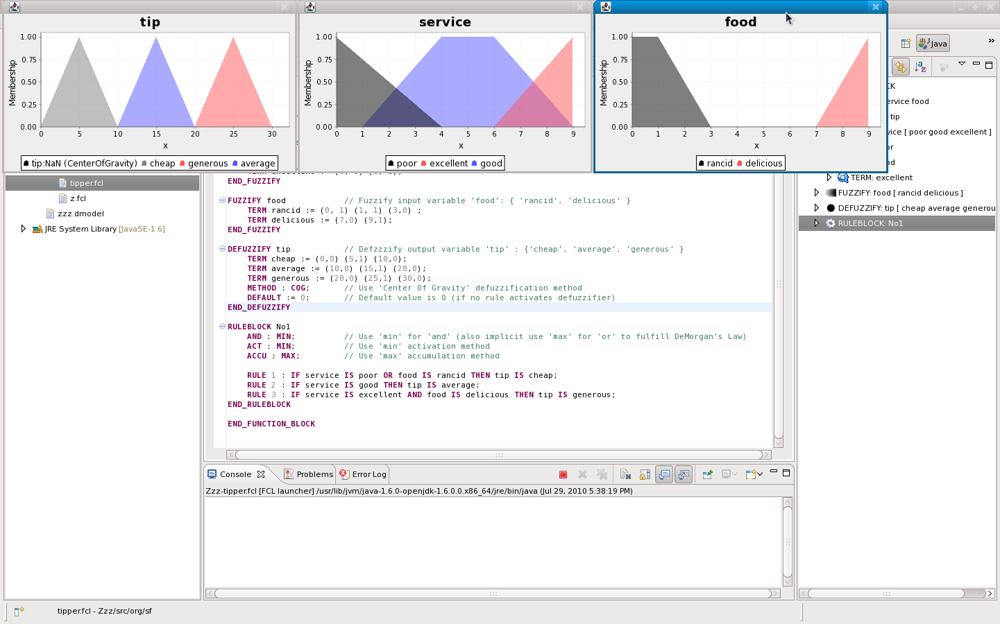
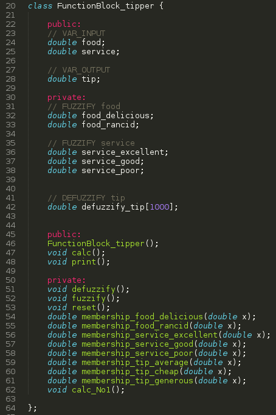

1. Introduction
jFuzzyLogic is an open source fuzzy logic library implementing industry standards to simplify fuzzy systems developments.
jFuzzyLogic is a fuzzy logic package. As you might have guessed, it is written in Java. jFuzzyLogic implements Fuzzy control language (FCL) specification IEC 61131 part 7, as well as a complete library that will greatly simplify your fuzzy logic development or research work.Fuzzy control language: For an introduction to FCL, you can read a pre-release specification here.
jFuzzyLogic: For a thorough introduction to jFuzzyLogic, I highly recommend that you read our paper.
Downloading: Why two versions?
For most applications, you should download the full version.
The core version is used mostly on mobile applications or applications where resources are limited and graphics capabilities are not required.
Getting the source code
You can download the source code form GitHub:
git clone https://github.com/pcingola/jFuzzyLogic.git
To build, just run
ant from the project's folder.
Publications & Citing
If you are using jFuzzyLogic in academic environments, please cite our publications:
- Cingolani, Pablo, and Jesús Alcalá-Fdez. "jFuzzyLogic: a Java Library to Design Fuzzy Logic Controllers According to the Standard for Fuzzy Control Programming"
@article{cingolanijfuzzylogic, title={jFuzzyLogic: a Java Library to Design Fuzzy Logic Controllers According to the Standard for Fuzzy Control Programming}, author={Cingolani, Pablo and Alcal{\'a}-Fdez, Jes{\'u}s} booktitle={International Journal of Computational Intelligence Systems}, pages={61--75}, year={2013} } - Cingolani, Pablo, and Jesus Alcala-Fdez. "jFuzzyLogic: a robust and flexible Fuzzy-Logic inference system language implementation." Fuzzy Systems (FUZZ-IEEE), 2012 IEEE International Conference on. IEEE, 2012.
@inproceedings{cingolani2012jfuzzylogic, title={jFuzzyLogic: a robust and flexible Fuzzy-Logic inference system language implementation}, author={Cingolani, Pablo and Alcala-Fdez, Jesus}, booktitle={Fuzzy Systems (FUZZ-IEEE), 2012 IEEE International Conference on}, pages={1--8}, year={2012}, organization={IEEE} }
2. Command line
Command line options.
jFuzzyLogic provides several command line options that are useful for development.
Here we show some common usage examples.
Running jFuzzyLogic without any command line option will show a simple help.
java -jar jFuzzyLogic.jar Usage: java -jar jFuzzyLogic.jar [options] Options: file.fcl : Load FCL file and show memebership functions. -c file.fcl : Compile. Generate C++ code from FCL file (to STDOUT) -e file.fcl in_1 in_2 ... in_n : Load FCL file, assign inputs i_1, i_2, ..., i_n and evaluate. demo : Run a demo exmaple (tipper.fcl)
A simple demo is available using the command line option
demo.
It will show an animation of the tipper.fcl example:
java -jar jFuzzyLogic.jar demo
Using an FCL file, jFuzzyLogic will show all memebership functions for all input and output variables.
java -jar jFuzzyLogic.jar myfile.fcl
You can also specify input variables using the command line option
-e, jFuzzyLogic will calculate and show the defuzzified output variables as well as the degree of support for each rule.
The -e command line option must be followed by the input variables values.
java -jar jFuzzyLogic.jar -e tipper.fcl 8.5 9
FUNCITON_BLOCK tipper
VAR_INPUT food = 8.500000
VAR_INPUT service = 9.000000
VAR_OUTPUT tip = 24.999984
RULE_BLOCK No1
Support Rule name Rule
0.000000 1 IF (service IS poor) OR (food IS rancid) THEN tip IS cheap;
0.000000 2 IF service IS good THEN tip IS average;
0.750000 3 IF (service IS excellent) AND (food IS delicious) THEN tip IS generous;
3. Fuzzy control language
The obvious advantages of having a standard language for fuzzy systems.
Fuzzy control language (FCL) is a language defined in the IEC 61131 part 7 specification.
Note: Unfortunately the FCL specification is not freely available and you have to buy the document from IEC.
But you can access a free copy of the pre-release version of the spec. here.
Obviously, having a standard language to program fuzzy systems has many benefits.
Before FCL, each fuzzy logic library implementation had different ways to define membership functions, rules, etc.
Most of the time you had to learn APIs which were incompatible from one system to another.
Furthermore, using APIs to create systems is cumbersome and error prone.
FCL simply removes all these problems.
Furthermore, FCL is quite simple to learn and most people learn the basics by taking a looks at a couple of examples.
Fuzzy control language: For an introduction to FCL, please read the pre-release specification here.
The following example is FCL code for the classic "tipper" problem.
The problem is how to calculate the tip in a restaurant (obviously, this is a toy example of a trivial problem. equivalent to a "hello world!" example in other programming languages):
You can download this file here.
/*
Example: A tip calculation FIS (fuzzy inference system)
Calculates tip based on 'service' and 'food'
Pablo Cingolani
*/
FUNCTION_BLOCK tipper // Block definition (there may be more than one block per file)
// Define input variables
VAR_INPUT
service : REAL;
food : REAL;
END_VAR
// Define output variable
VAR_OUTPUT
tip : REAL;
END_VAR
// Fuzzify input variable 'service': {'poor', 'good' , 'excellent'}
FUZZIFY service
TERM poor := (0, 1) (4, 0) ;
TERM good := (1, 0) (4,1) (6,1) (9,0);
TERM excellent := (6, 0) (9, 1);
END_FUZZIFY
// Fuzzify input variable 'food': { 'rancid', 'delicious' }
FUZZIFY food
TERM rancid := (0, 1) (1, 1) (3,0) ;
TERM delicious := (7,0) (9,1);
END_FUZZIFY
// Defzzzify output variable 'tip' : {'cheap', 'average', 'generous' }
DEFUZZIFY tip
TERM cheap := (0,0) (5,1) (10,0);
TERM average := (10,0) (15,1) (20,0);
TERM generous := (20,0) (25,1) (30,0);
METHOD : COG; // Use 'Center Of Gravity' defuzzification method
DEFAULT := 0; // Default value is 0 (if no rule activates defuzzifier)
END_DEFUZZIFY
// Inference rules
RULEBLOCK No1
AND : MIN; // Use 'min' for 'and'
ACT : MIN; // Use 'min' activation method
ACCU : MAX; // Use 'max' accumulation method
RULE 1 : IF service IS poor OR food IS rancid THEN tip IS cheap;
RULE 2 : IF service IS good THEN tip IS average;
RULE 3 : IF service IS excellent AND food IS delicious THEN tip IS generous;
END_RULEBLOCK
END_FUNCTION_BLOCK
In order to run this example, you can download the FCL file tipper.fcl and then run the following command:
java -jar jFuzzyLogic.jar tipper.fcl
This command will parse and load the FCL code and show the membership functions (continue reading the next sub-section for more details).

Step by step explanation
Keep in mind that FCL is defined as a 'Control language', so the main concept is a 'control block' which has some input and output variables. You cannot make programs in the usual way, for instance, there is no "print" statement in FCL. Furthermore, there is no implicit execution order. In theory, the whole block is executed in parallel.We now analyze the previously shown FCL code (tipper.fcl):
- First you define each
FUNCTION_BLOCK(there may be more than one in each file)
FUNCTION_BLOCK tipper
- Then input and output variables are defined.
Note: Even though IEC-61131 defines several data types, the only variable type supported isREAL, which is the only one needed for fuzzy logic applications.
VAR_INPUT service : REAL; food : REAL; END_VAR VAR_OUTPUT tip : REAL; END_VAR
- Next we define how each input variable is fuzzified is defined in
FUZZIFYblock. In each block we define one or moreTERMs(also called LinguisticTerms). Each term is composed by a name and a membership function. E.g.:
FUZZIFY service TERM poor := (0, 1) (4, 0) ; TERM good := (1, 0) (4,1) (6,1) (9,0); TERM excellent := (6, 0) (9, 1); END_FUZZIFY
In this lines we define how variableservicewill be fuzzified. Three terms are used, for instance termpooruses a piece-wise linear membership function defined by points (x0, y0) = (0, 1) and (x1, y1) = (4, 0)

Similarly, we definefoodmembership functions:
FUZZIFY food TERM rancid := (0, 1) (1, 1) (3,0) ; TERM delicious := (7,0) (9,1); END_FUZZIFY
- Output variables are defuzzified to get a 'real' output number.
Defuzzifiers are defined in
DEFUZZIFYblocks. Linguistic terms (or simply terms) are defined just like inFUZZIFYblocks.DEFUZZIFY tip TERM cheap := (0,0) (5,1) (10,0); TERM average := (10,0) (15,1) (20,0); TERM generous := (20,0) (25,1) (30,0);

Next, we state that 'Center of gravity' as defuzzifier method.METHOD : COG;
We also use '0' as default value, i.e. the value use when no rule activates this variable.DEFAULT := 0;
- At this point we are ready to define the rules.
This is done using a
RULEBLOCK. First we must define some parameters. Use 'min' for 'and' (implicitly uses 'max' for 'or' to fulfill DeMorgan's Law).RULEBLOCK No1 AND : MIN;Use 'min' activation methodACT : MIN;
Use 'maximum' as accumulation method.ACCU : MAX;
And now define some fuzzy rulesRULE 1 : IF service IS poor OR food IS rancid THEN tip IS cheap; RULE 2 : IF service IS good THEN tip IS average; RULE 3 : IF service IS excellent AND food IS delicious THEN tip is generous;Ok, that's it, you've got a fuzzy controller!
4. FCL definitions
Here we show some details on jFuzzyLogic's structure as well as some basic FCL definitions.
How this package works and how classes are organized is briefly explained here.
- A fuzzy inference system (
FIS) is composed by one or moreFuncionBlockclass, like in FCL. E.g.:FUNCTION_BLOCK functionBlock1 ... END_FUNCTION_BLOCK FUNCTION_BLOCK functionBlock2 ... END_FUNCTION_BLOCK
- Each
FuncionBlockis composed by one or moreRuleBlockclass and someVariables, as well asFuzzyfiersandDefuzzifiers. Again, like in FCL, e.g.:FUNCTION_BLOCK functionBlockName VAR_INPUT ... END_VAR VAR_OUTPUT ... END_VAR FUZZIFY inputVariable ... END_FUZZIFY DEFUZZIFY outputVariable ... END_DEFUZZIFY RULEBLOCK No1 ... END_RULEBLOCK END_FUNCTION_BLOCK
- Each
Ruleclass is composed by an antecedent (IF part) and a consequent (THEN part), e.g.:
RULE 1 : IF service IS poor OR food IS rancid THEN tip IS cheap;
- Antecedent: "service IS poor OR food IS rancid"
- Consequent: "tip IS cheap". Note that there may be more than one consequent.
- A rule implication (or activation) method can be defined (althought FCL does not allow different implication method for each rule, it can be defined at RULEBLOCK level). e.g.: ACT : MIN; // Use 'min' activation method
- Consequents are a 'collection' of
RuleTermsclasses (e.g. "tip IS cheap" is a RuleTerm) - An Antecedent is represented by a
RuleExpressionclass. ARuleExpressionis just two terms connected by oneRuleConnectionMethod(rule conectors are 'AND', 'OR' and 'NOT')
e.g.: service IS poor OR food IS rancid
- First term: "service IS poor"
- Second term: "food IS rancid"
- RuleConnectionMethod is 'OR'
Note: Each term can be either aRuleTermor aRuleExpression, this definition is recursive, so arbitrarily complex expressions can be created. - Each
RuleTermis defined by aVariableand aLinguisticTermName. e.g.: service IS poor-
Variable: service -
LinguisticTermName: 'poor' - Connector: 'IS'
-
- Each
Variablehas anameand someLinguisticTermse.g.: For an input variable:FUZZIFY service // Fuzzify input variable 'service': {'poor', 'good' , 'excellent'} TERM poor := (0, 1) (4, 0) ; TERM good := (1, 0) (4,1) (6,1) (9,0); TERM excellent := (6, 0) (9, 1); END_FUZZIFYe.g.: For an output variable:
DEFUZZIFY tip // Defzzzify output variable 'tip' : {'cheap', 'average', 'generous' } TERM cheap := (0,0) (5,1) (10,0); TERM average := (10,0) (15,1) (20,0); TERM generous := (20,0) (25,1) (30,0); METHOD : COG; // Use 'Center Of Gravity' defuzzification method DEFAULT := 0; // Default value is 0 (if no rule activates defuzzifier) END_DEFUZZIFYAs you can see, for an output variable you need to specify an accumulation (orRuleAgrregationMethod) and aDefuzzifier. e.g.:ACCU : MAX; // Use 'max' accumulation method METHOD : COG; // Use 'Center Of Gravity' defuzzification method
5. Membership functions
jFuzzyLogic provides convenient extensions to easily define membership functions.
Membership functions are broadly divided into two sub classes: continuous and discrete.
One variable can only have either continuous or discrete membership functions.
Membership functions
- Triangular:
trian min mid maxFUZZIFY inVar2 TERM poor := trian 0 2.5 5; TERM good := trian 2.5 5 7.5; TERM excellent := trian 5 7.5 10; END_FUZZIFY

- Trapetzoidal:
trape min midLow midHigh maxFUZZIFY inVar3 TERM poor := trape 0 2 3 4; TERM good := trape 3 4 5 6; TERM excellent := trape 5 6 7 8; END_FUZZIFY

- Gauss:
gauss mean stdevFUZZIFY inVar5 TERM poor := gauss 2 2; TERM good := gauss 5 2; TERM excellent := gauss 8 2; END_FUZZIFY

- Generalized bell:
gbell a b meanFUZZIFY inVar4 TERM poor := gbell 2 4 2; TERM good := gbell 2 4 5; TERM excellent := gbell 2 4 8; END_FUZZIFY

- Sigmoidal:
sigm gain centerFUZZIFY inVar6 TERM poor := sigm -4 3; TERM good := sigm 4 7; END_FUZZIFY

- Singleton: just one number (where singleton membership is 1)
FUZZIFY inVar7 TERM poor := 2; TERM good := 5; TERM excellent := 8; END_FUZZIFY

- Piece-wise linear:
(x_1, y_1) (x_2, y_2) .... (x_n, y_n)FUZZIFY inVar1 TERM poor := (0,1) (2, 1) (4, 0) ; TERM good := (1, 0) (2, 0.5) (3, 0.7) (4,1) (4.5, 1) (5, 0.6) (6, 0.3) (7, 0.3) (8, 0.8) (9, 0.8) (10,0); TERM excellent := (6, 0) (9, 1) (10,1); END_FUZZIFY
6. Java API
Running FCL code from your Java code is very easy.
This is a simple Java code used to load a fuzzy inference system (FIS), this code available at TestTipper.java
package net.sourceforge.jFuzzyLogic.test;
import net.sourceforge.jFuzzyLogic.FIS;
import net.sourceforge.jFuzzyLogic.rule.FuzzyRuleSet;
/**
* Test parsing an FCL file
* @author pcingola@users.sourceforge.net
*/
public class TestTipper {
public static void main(String[] args) throws Exception {
// Load from 'FCL' file
String fileName = "fcl/tipper.fcl";
FIS fis = FIS.load(fileName,true);
// Error while loading?
if( fis == null ) {
System.err.println("Can't load file: '" + fileName + "'");
return;
}
// Show
JFuzzyChart.get().chart(functionBlock);
// Set inputs
fis.setVariable("service", 3);
fis.setVariable("food", 7);
// Evaluate
fis.evaluate();
// Show output variable's chart
Variable tip = functionBlock.getVariable("tip");
JFuzzyChart.get().chart(tip, tip.getDefuzzifier(), true);
// Print ruleSet
System.out.println(fis);
}
}
The code is pretty straightforward, but let's go over the main points.
-
FIS stands for Fuzzy Inference System and it is how the IEC norm refers to whatever you put in an FCL file.
So in order to load an FCL file, we use
FIS.load(fileName)function.
String fileName = "fcl/tipper.fcl"; FIS fis = FIS.load(fileName,true);
- If an error is detected when loading or parsing the FCL file
FIS.load()returnsnull.if( fis == null ) { // Error while loading? System.err.println("Can't load file: '" + fileName + "'"); return; } - Now we can plot all variables in the FIZ (each LinguisticTerm in each Variable in the FUNCTION_BLOCK).
This might be useful when you are debugging your code.
JFuzzyChart.get().chart(functionBlock);
And we get the following images: - In order to make actual calculations and run the FIS, we must setting the input variables
fis.setVariable("service", 3); fis.setVariable("food", 7); - Now we can run the system
fis.evaluate();
- If we want to know the system's output we can read the output variable's values (in this case there's only one output variable 'tip')
Variable tip = functionBlock.getVariable("tip"); JFuzzyChart.get().chart(tip, tip.getDefuzzifier(), true); - We can also plot output's defuzzifier
fis.getVariable("tip").chartDefuzzifier(true);
- And, of course, we can print the FIS
System.out.println(fis);
Obtaining the system's output
After Fis.evaluate() you can access the system's output variables usingfis.getVariable("variableName").
Here is a simple code snippet from TestTipper.java example (slightly modified):
public class TestTipper {
public static void main(String[] args) throws Exception {
FIS fis = FIS.load("fcl/tipper.fcl", true); // Load from 'FCL' file
fis.setVariable("service", 3); // Set inputs
fis.setVariable("food", 7);
fis.evaluate(); // Evaluate
// Show output variable
System.out.println("Output value:" + fis.getVariable("tip").getValue());
}
}
Rule usage
In order to asses how rules are used, you just need to take a look at the rule's "degree of support" (by default is printed when you print the rule). For instance here is a small example (it usestipper.fcl file from the 'fcl' examples directory in the package):
package net.sourceforge.jFuzzyLogic;
import net.sourceforge.jFuzzyLogic.rule.Rule;
public class Zzz {
public static void main(String[] args) throws Exception {
FIS fis = FIS.load("fcl/tipper.fcl", true); // Load from 'FCL' file
fis.setVariable("service", 3); // Set inputs
fis.setVariable("food", 7);
fis.evaluate(); // Evaluate
System.out.println("Output value:" + fis.getVariable("tip").getValue()); // Show output variable
// Show each rule (and degree of support)
for( Rule r : fis.getFunctionBlock("tipper").getFuzzyRuleBlock("No1").getRules() )
System.out.println(r);
}
}
The output is:
Output value:11.701603788948043 1 (0.25) if (service IS poor) OR (food IS rancid) then tip IS cheap [weight: 1.0] 2 (0.6666666666666666) if service IS good then tip IS average [weight: 1.0] 3 (0.0) if (service IS excellent) AND (food IS delicious) then tip IS generous [weight: 1.0]
which shows the degree of support for each rule (0.25, 0.666666 and 0)
Adding rules programatically
First of all, I have to tell you that hard-coding the rules is highly discouraged (pretty much like hard-coding values). If you absolutely must do it for whatever reason, here is an example on how to do it:
// RULE 3 : IF ((service IS good) OR (service IS excellent)) AND food IS delicious THEN tip is generous;
Rule rule3 = new Rule("Rule3", ruleBlock);
RuleTerm term1 = new RuleTerm(service, "good", false);
RuleTerm term2 = new RuleTerm(service, "excellent", false);
RuleTerm term3 = new RuleTerm(food, "delicious", false);
RuleExpression antecedentOr = new RuleExpression(term1, term2, new RuleConnectionMethodOrMax());
RuleExpression antecedentAnd = new RuleExpression(antecedentOr, term3, new RuleConnectionMethodAndMin());
rule3.setAntecedents(antecedentAnd);
rule3.addConsequent(tip, "generous", false);
ruleBlock.add(rule3);
Remember that a rule antecedent is just a RuleExpression.
A RuleExpression can be either a combination of RuleExpressions or RuleTerms.
In this case, you'll have to use two RuleExpressions combined by a RuleConnectionMethodAndMin, i.e.:
IF (var1 IS low) AND ( (var2 IS medium) AND (var3 IS high) ) THEN ....
This is because 'AND' accepts only 2 terms (all RuleExpressions accept one only or 2 terms).
7. Using jFuzzyLogic in projects
This section shows how to add jFuzzyLogic as a library in your Java projects.
In order to use jFuzzyLogic in your projects, you must add jFuzzyLogic.jar as one of your JAR files (libraries).
This is done like you'd do it with any other JAR file.
Since this is a basic Java programming skill, so I won't get into many details.
Full example project: Here, you can download a ZIP file with a sample Eclipse project that uses jFuzzyLogic.
This video shows how to create a Java project that uses jFuzzyLogic using the Eclipse IDE.
Note: The Java code is copied from TestTipper.java and the FCL code is from tipper.fcl file.
8. Eclipse plugin
We provide a convenient Eclipse plug-in to help developing FCL programs.
The Eclipse plug-in for FCL files provides some interesting features: syntax coloring, auto-completion, outline, quick outline, etc. Some features shown in this image (click to enlarge)
Eclipse plug-in install instructions:
- Open Eclipse
- Click on the menu
Help -> Install new softwareyou'll see the software update window - Click on
Add
- Name:
jFuzzyLogicUpdateSite
- Location:
http://jfuzzylogic.sourceforge.net/eclipse/
- Click OK an follow the instructions.
{kind=link}
Notes:
- Some required dependencies will also be intalled (Xtext)
- You will have to restart eclipse after installing this plugin
Eclipse plug-in feature examples
Syntax coloring, outline (click to enlarge)
{kind=link}
You can also view the membership functions by "Running" the FCL file (see next image, click to enlarge)

{kind=link}
9. FCL compiler
jFuzzyLogic can compile FCL into C++ code.
A built in compiler allows to compiler FCL code into C++. For instance, by simply running the following command, we can create a C++ program that has the same functionality as the FCL program:
java -jar jFuzzyLogic.jar -c tipper.fcl > tipper.cppThe previous command creates this C++ code.

10. Parameter optimization
jFuzzyLogic provides a parameter optimization framework, allowing to learn or refine fuzzy parameters using machine learning algorithms.
The parameter optimization framework requires to define a learning method which can be applied to a dataset in order to refine fuzzy membership parameters.In this Java code example, we optimize fuzzy sets' parameters and fuzzy rule's weights:
//---
// Load FIS (Fuzzy Inference System)
//---
FIS fis = FIS.load("fcl/qualify.fcl");
RuleBlock ruleBlock = fis.getFunctionBlock().getRuleBlock();
//---
// Create a list of parameter to optimize
//---
ArrayList parameterList = new ArrayList();
// Add variables.
// Note: Fuzzy sets' parameters for these
// variables will be optimized
Parameter.parameterListAddVariable(parameterList
, fis.getVariable("scoring"));
Parameter.parameterListAddVariable(parameterList
, fis.getVariable("credLimMul"));
// Add every rule's weight
for( Rule rule = ruleBlock )
Parameter.parameterListAddRule(parameterList, rule);
//---
// Create an error function to be
// optimzed (i.e. minimized)
//---
ErrorFunctionQualify errorFunction = new ErrorFunctionQualify();
//---
// Optimize (using 'Delta jump optimization')
//---
OptimizationDeltaJump optimizationDeltaJump =
new OptimizationDeltaJump(ruleBlock
, errorFunction, parameterList);
// Number optimization of iterations
optimizationDeltaJump.setMaxIterations(20);
optimizationDeltaJump.optimize(true);
The error function (
ErrorFunctionQualify) can be just any error function, the structure for the code should be like this:
public class ErrorFunctionQualify extends ErrorFunction {
public double evaluate(RuleBlock ruleBlock) {
double error;
// Calculate your desired error here...
return error;
}
}